Florida Mansion
$12,500,350
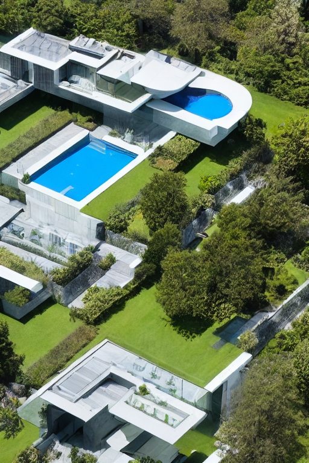Welcome to the epitome of modern luxury living: the stunning modern mansion with an outdoor pool, boasting an open-plan design and abundant glass features that frame breathtaking views.
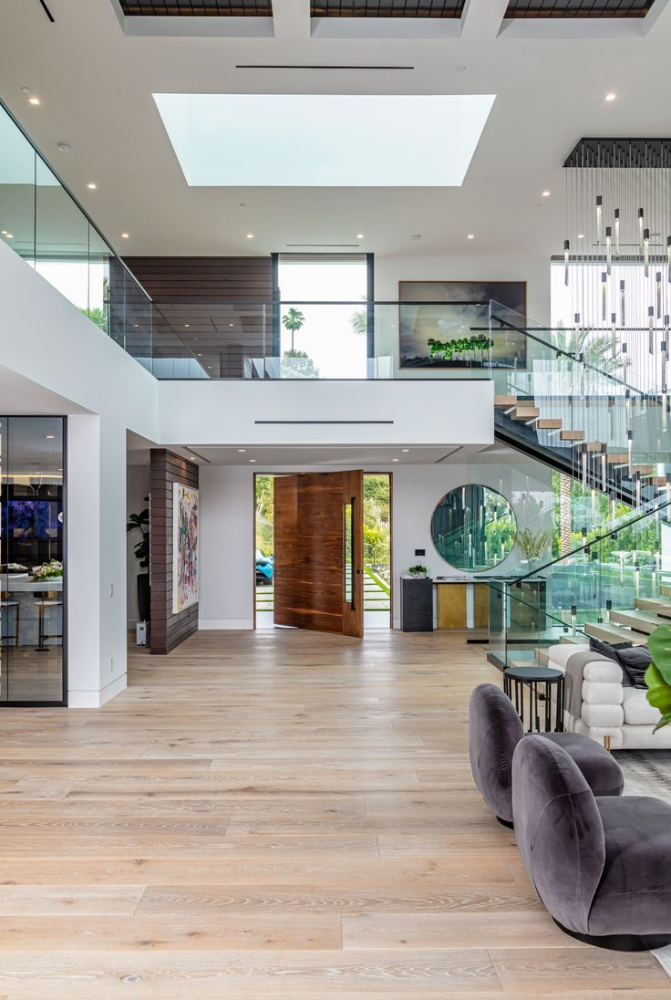 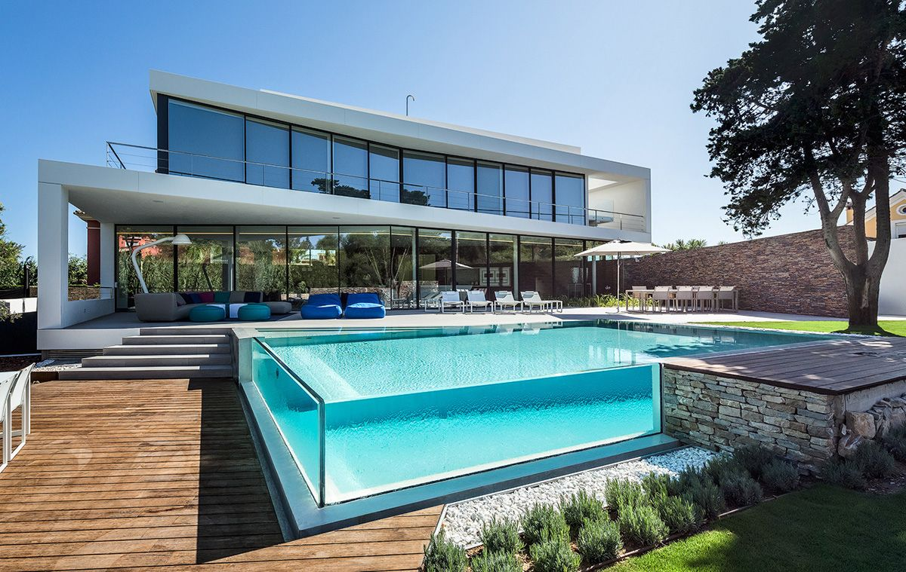As you step onto the grounds of this architectural marvel, you're greeted by meticulously landscaped gardens that seamlessly blend with the surrounding natural beauty. The exterior facade is a symphony of clean lines and contemporary materials, with sleek surfaces of glass, steel, and stone exuding sophistication and style.
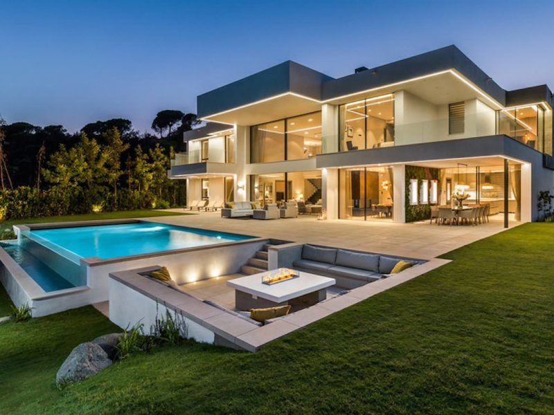Upon entering the mansion, you're immediately struck by the sense of space and light. The open-plan layout effortlessly connects the various living areas, creating an environment that's perfect for both intimate gatherings and grand entertaining.
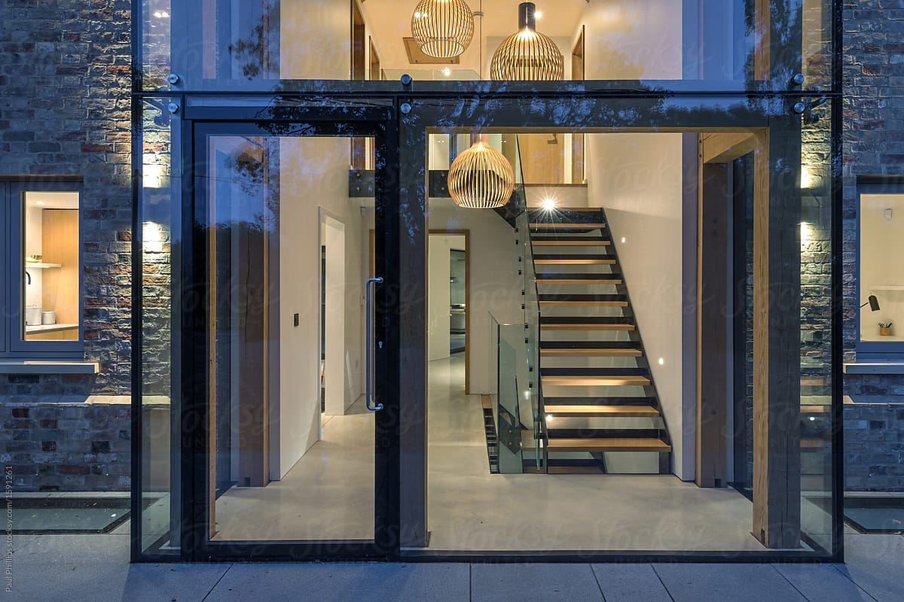The heart of the home is undoubtedly the expansive living area, where floor-to-ceiling windows stretch along the back wall, offering uninterrupted vistas of the lush landscape beyond. Whether you're lounging on the plush designer furniture or enjoying a gourmet meal in the dining area, the panoramic views serve as a mesmerizing backdrop to every moment.
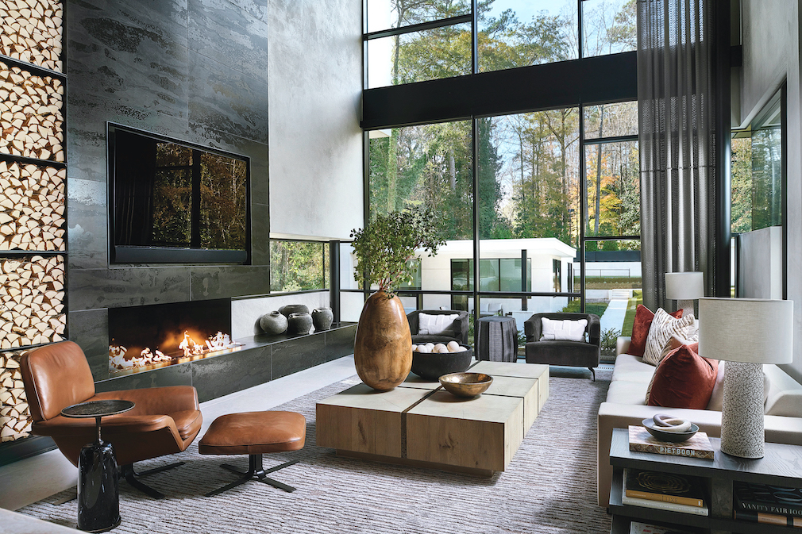The kitchen is a chef's dream, outfitted with state-of-the-art appliances, sleek countertops, and ample storage space. Designed for both functionality and style, it's a culinary haven where you can unleash your creativity and whip up culinary masterpieces while enjoying the scenic surroundings.
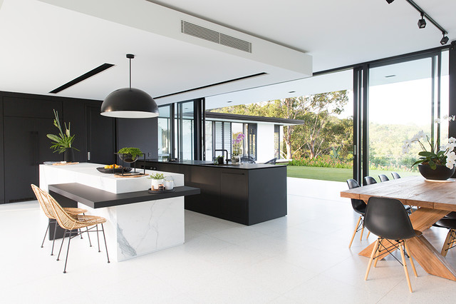For those who crave relaxation and rejuvenation, the master suite is a sanctuary of comfort and tranquility. Featuring a spacious bedroom with its own private terrace overlooking the pool, as well as a luxurious ensuite bathroom complete with a soaking tub and walk-in shower, it's a haven for rest and relaxation.
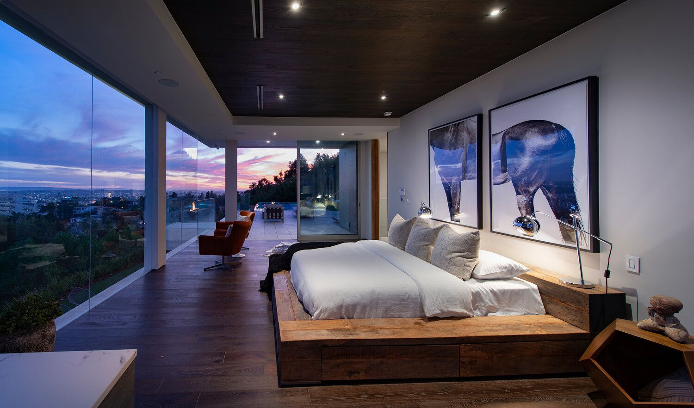 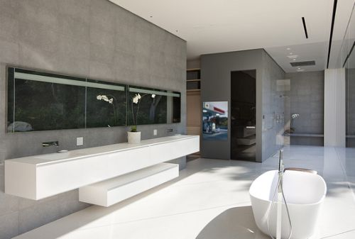Outside, the entertainment possibilities are endless. The expansive patio area is perfect for alfresco dining and lounging in the sun, while the infinity pool beckons you to take a refreshing dip on hot summer days. As the sun sets, the outdoor fireplace becomes the focal point for cozy gatherings under the stars, creating memories that will last a lifetime.
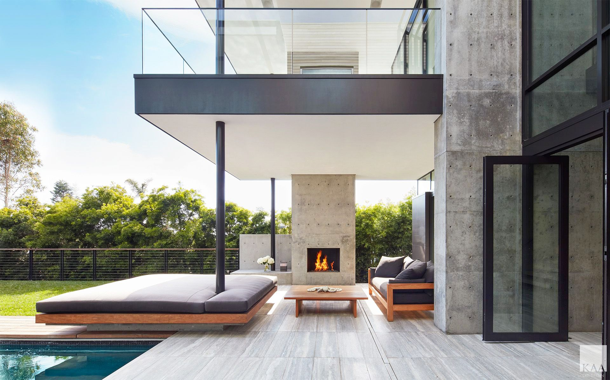In every corner of this modern mansion, thoughtful design and meticulous attention to detail come together to create a living experience that's truly unparalleled. With its seamless integration of indoor and outdoor spaces, abundance of natural light, and panoramic views that take your breath away, this is more than just a home - it's a masterpiece of modern architecture.

Approaching the grand estate through wrought-iron gates, the eye is immediately drawn to the stately presence of the Victorian mansion. Its light pink façade exudes a timeless elegance, complemented by intricate architectural details such as ornate trimmings and delicate scrollwork. Towering above, the slate-black roof adds a striking contrast, evoking a sense of mystery and grandeur. A sweeping driveway, lined with ancient oaks and manicured gardens, leads to the imposing entrance, hinting at the opulence that lies within
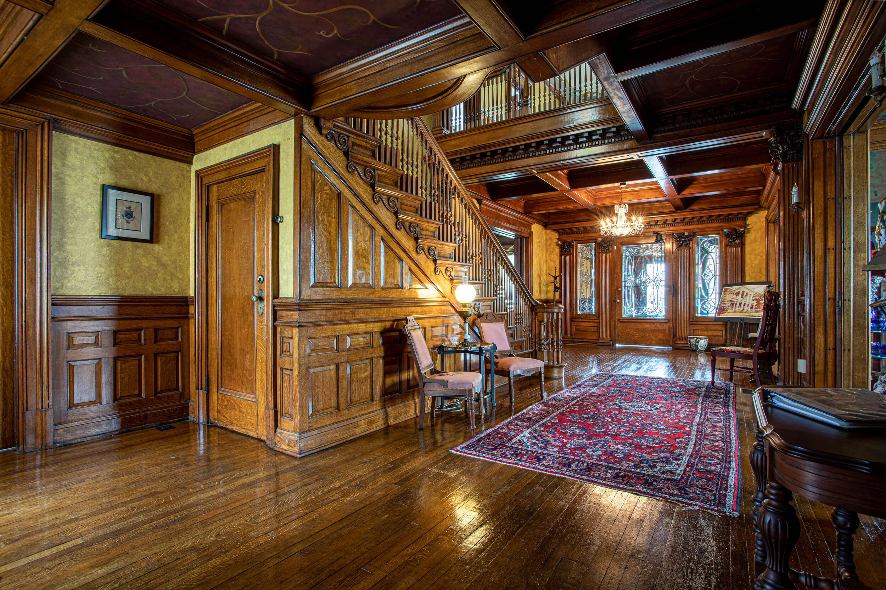 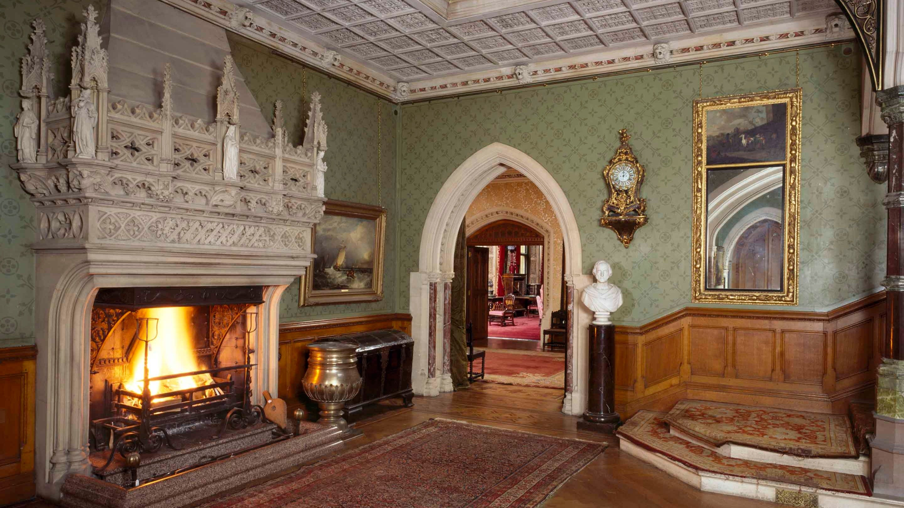Stepping over the threshold, guests are enveloped in the opulent charm of the foyer. A soaring ceiling adorned with intricate plasterwork creates an atmosphere of grandeur, while a cascading crystal chandelier bathes the space in a soft, ethereal glow. Rich hardwood floors gleam underfoot, leading the way to a majestic staircase adorned with a hand-carved banister. Antique furnishings, upholstered in sumptuous fabrics, offer a welcoming invitation to linger and explore the treasures that lie beyond.
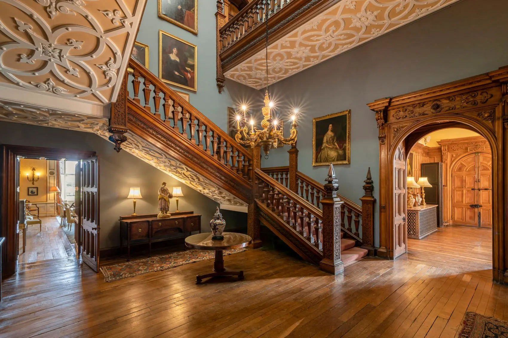Wingback chairs, upholstered in supple leather, invite guests to sink into their depths, enveloped in the scent of aged paper and polished wood. Soft lamplight casts a warm glow over the room, casting shadows that dance across the intricate parquet flooring
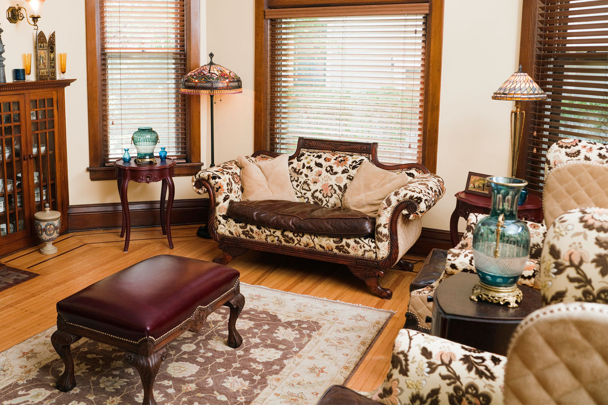Elegance and comfort converge in the lavish living room, where soaring ceilings and towering windows flood the space with natural light. Plush velvet sofas, upholstered in shades of deep burgundy and gold, offer a luxurious spot to unwind beside the roaring fireplace. Intricately carved mantels showcase treasured heirlooms and objets d'art, while silk draperies cascade in graceful folds, framing panoramic views of the sprawling grounds beyond. A grand piano occupies a corner, its melodic strains mingling with the soft rustle of leaves and the distant chirrup of songbirds..
The heart of the home, the kitchen seamlessly blends old-world charm with modern functionality. Exposed beams overhead lend a rustic appeal, while hand-painted tiles adorn the backsplash, adding a touch of whimsy to the space. A massive marble-topped island takes center stage, surrounded by bespoke cabinetry crafted from rich mahogany. State-of-the-art appliances discreetly integrate into the traditional design, ensuring that culinary pursuits are both effortless and elegant. A cozy breakfast nook, nestled beside a bay window overlooking the gardens, provides the perfect spot to savor morning coffee and conversation.

Ascending the grand staircase, a corridor lined with gilded sconces leads to a sanctuary of rest and relaxation. Each bedroom is a study in refined elegance, with sumptuous furnishings and plush textiles that cocoon occupants in luxury. Canopied four-poster beds, swathed in billowing silk, take center stage, flanked by antique armoires and vanity tables adorned with delicate filigree. Ensuite bathrooms, outfitted with clawfoot tubs and gleaming brass fixtures, offer a sanctuary for indulgent self-care rituals, while private balconies provide a secluded retreat for quiet contemplation.
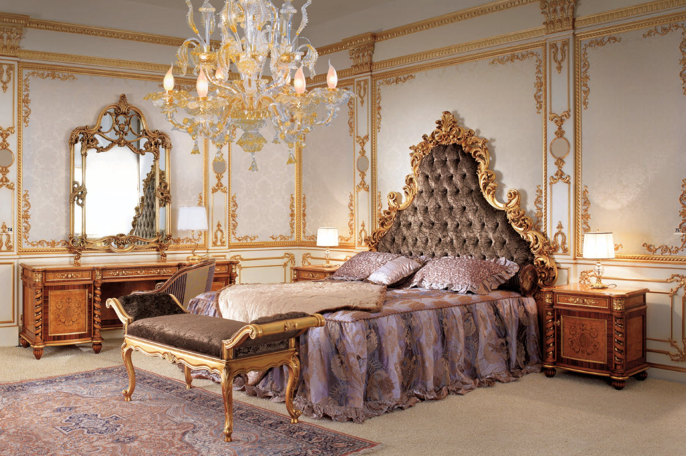 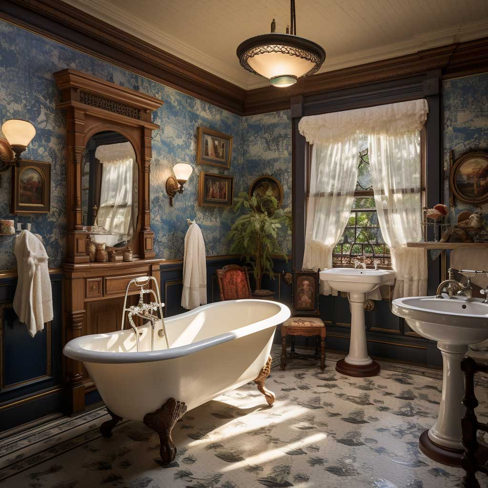Outside, the meticulously manicured gardens unfold like a verdant tapestry, weaving together formal symmetry and natural beauty. Winding pathways meander through lush lawns and vibrant flower beds, leading to secluded alcoves and hidden gazebos tucked beneath ancient shade trees. A tranquil pond, its surface shimmering with lily pads and iridescent koi, invites quiet reflection, while a stone terrace, furnished with wrought-iron bistro sets, beckons for alfresco dining and soirées under the stars. With every season, the landscape transforms, revealing new delights and enchanting visitors with its timeless allure.
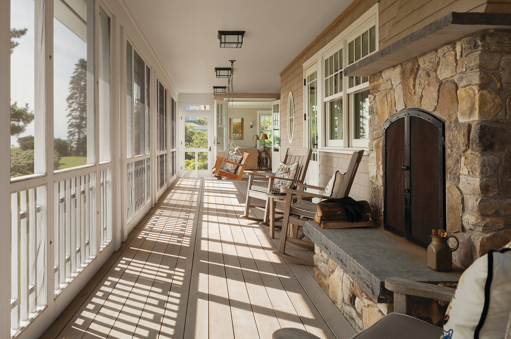 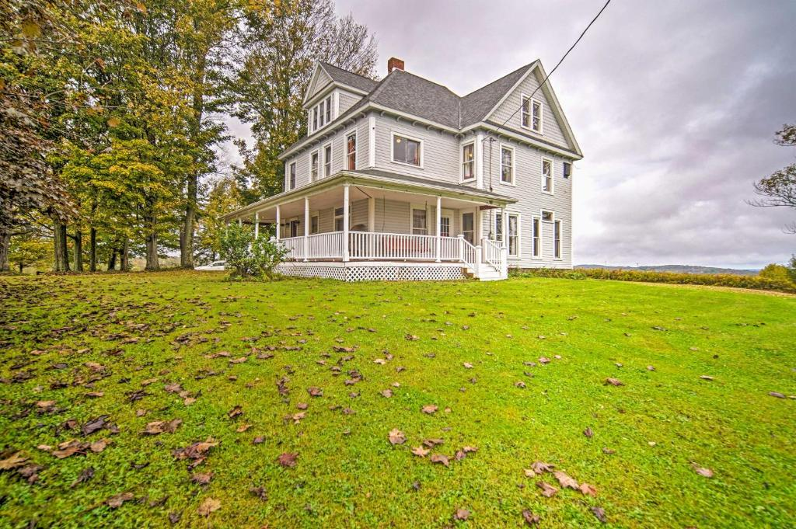